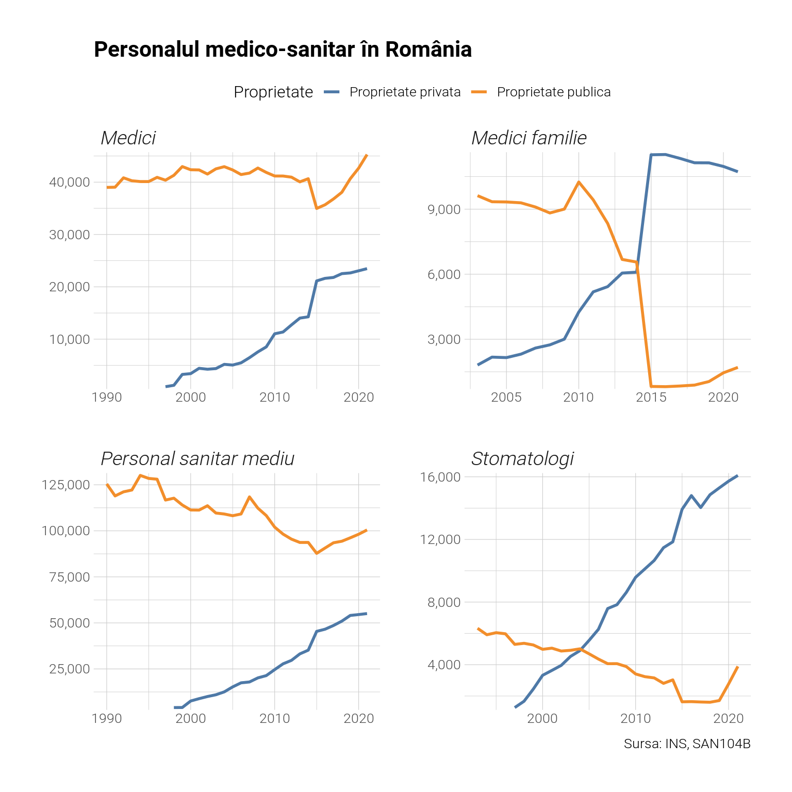
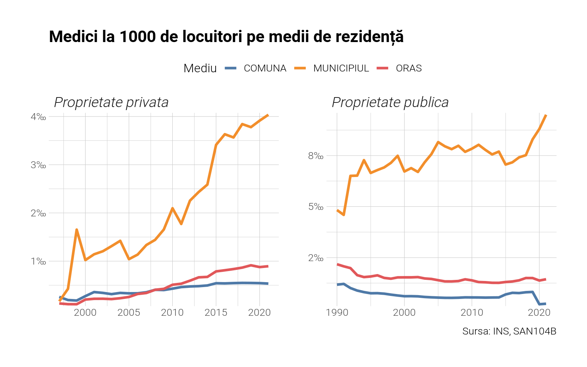
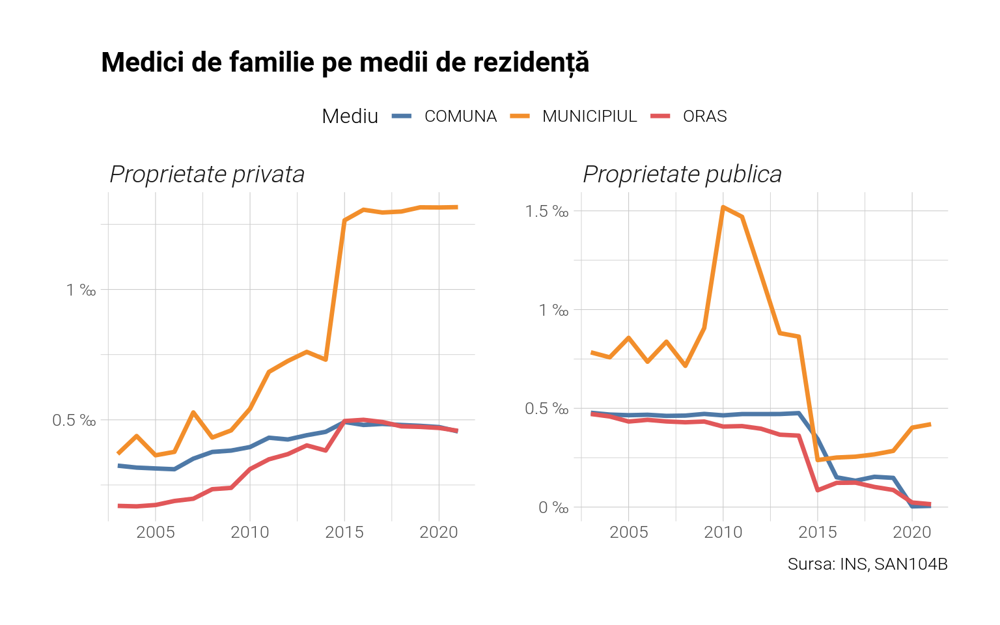
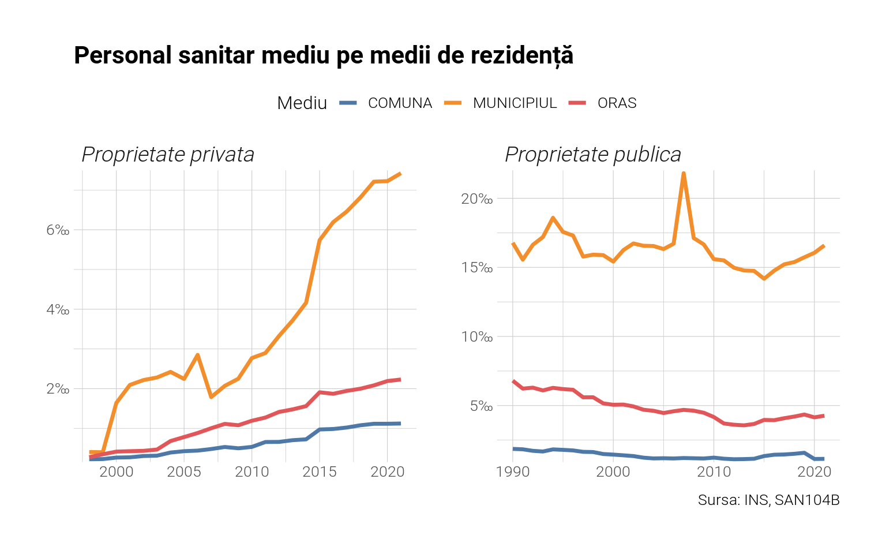
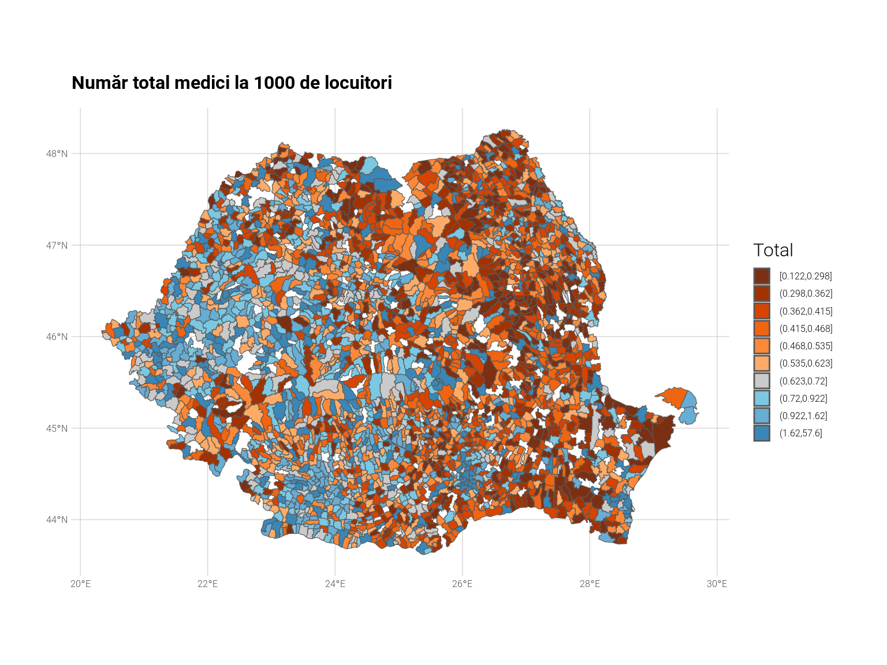

Câți medici avem în țară ? Unde există deficitul ? Vom folosi datele de la INS, mai precis foaia SAN104B, pentru a răspunde la aceste întrebări.
Arată codul
library(tidyverse)library(sf) #pentru harti si date spatialelibrary(TEMPO) #pentru a extrage datele de pe INSlibrary(gt)library(ggthemes)library(gtExtras)library(hrbrthemes) #tema graficelortheme_set(hrbrthemes::theme_ipsum_tw(strip_text_size =14, strip_text_family ="Roboto",strip_text_face ="italic",axis_title_size =12,axis_text_size =10,base_family ="Roboto",plot_title_family ="Roboto",subtitle_family ="Roboto",caption_family ="Roboto", caption_size =10,plot_title_size =16,subtitle_size =12) +theme(legend.text =element_text(size=10), legend.title =element_text(size=12),legend.key.size =unit(0.5, "cm"))) #setam tema graficelor #descarcam foile SAN104B de pe INS:#TEMPO::tempo_bulk(codes="SAN104B", directory = here::here("data/post-4"))x <-read_csv(here::here("data/post-4/SAN104B.csv")) %>%set_names(c("Categorii", "Proprietate", "Judete", "Localitati", "Ani", "Numar", "Valoare")) %>%mutate(Ani =parse_number(Ani)) %>%mutate(Categorii =gsub("din total medici.+", "Medici familie", Categorii)) %>%select(-Numar) %>%filter(!grepl("mixta", Proprietate), Categorii!="Farmacisti")harta <- sf::read_sf(here::here("data", "post-2", "ro_uat_poligon.geojson"))harta[grepl("Bucure.ti", harta$name), "natcode"] <-rep("179132", 6)x %>%filter(Localitati=="TOTAL", Judete=="TOTAL") %>%ggplot(aes(x=Ani, y=Valoare, group=Proprietate)) +geom_line(aes(colour=Proprietate), size=1) +facet_wrap(~Categorii, ncol=2, scales='free') +labs(title ="Personalul medico-sanitar în România", x=NULL, y=NULL,caption="Sursa: INS, SAN104B") +scale_y_comma() +scale_color_tableau() +theme(legend.position ="top")

Observăm un trend general de creștere pentru personalul sanitar angajat în proprietatea privată pentru toate categoriile. În cazul medicilor de familie, numărul celor angajați în proprietate publică a scăzut accentuat după 2012-2013 ajungând în ultima perioadă la o valoare nesemnificativă. Categoria “Medici” trebuie interpretată ca totalul medicilor, incluzând și pe cei de familie. Aceste date pot fi puse și sub forma unui tabel.
Să vizualizăm aceleași trenduri doar pentru medici însă pe medii de rezidență. Observăm că trendul constant pentru personalul medical angajat în proprietatea publică este de fapt unul divergent la nivel rural-urbal: pe când în municipii numărul lor a crescut ușor, în rural și urbanul mic el a scăzut, dând astfel un număr relativ constant la nivel național. În privința celor angajați în privat, trendul este de creștere pentru toate mediile, mai accentuat, desigur, pentru urbanul mare. Lecția acestui grafic: ne izbește procentul mic de medici și personal sanitar în general în mediul rural, proporția fiind și de 5-10 ori mai mică în rural față de urbanul mare.
Arată codul
x <- x %>%filter(Judete!="TOTAL", Localitati!="TOTAL") %>%mutate(natcode =parse_number(Localitati)) %>%mutate(mediu =str_extract(Localitati, "ORAS|MUNICIPIUL") %>%replace_na("COMUNA")) %>%mutate(natcode=as.character(natcode))
Arată codul
x %>%inner_join(harta) %>%group_by(Categorii, Proprietate, mediu, Ani) %>%summarise(total =1000*sum(Valoare)/sum(pop2015)) %>%ungroup() %>%filter(Categorii=="Medici") %>%ggplot(aes(x=Ani, y=total, group=mediu)) +geom_line(aes(colour=mediu), size=1.2) +facet_wrap(~Proprietate, ncol=2, scales='free') +labs(title ="Medici la 1000 de locuitori pe medii de rezidență", x=NULL, y=NULL, colour="Mediu", caption="Sursa: INS, SAN104B") +scale_y_percent(suffix="‰", scale =1) +scale_color_tableau() +theme(legend.position ="top")

Să repetăm același lucru și pentru medicii de familie și personalul sanitar mediu.
Arată codul
x %>%inner_join(harta) %>%group_by(Categorii, Proprietate, mediu, Ani) %>%summarise(total =1000*sum(Valoare)/sum(pop2015)) %>%ungroup() %>%filter(Categorii=="Medici familie") %>%ggplot(aes(x=Ani, y=total, group=mediu)) +geom_line(aes(colour=mediu), size=1.2) +facet_wrap(~Proprietate, ncol=2, scales='free') +labs(title ="Medici de familie pe medii de rezidență", x=NULL, y=NULL, colour="Mediu", caption="Sursa: INS, SAN104B") +scale_y_continuous(labels=function(x) paste(x, "‰"))+theme(legend.position="top") +scale_color_tableau()

Arată codul
x %>%inner_join(harta) %>%group_by(Categorii, Proprietate, mediu, Ani) %>%summarise(total =1000*sum(Valoare)/sum(pop2015)) %>%ungroup() %>%filter(grepl("Personal", Categorii)) %>%ggplot(aes(x=Ani, y=total, group=mediu)) +geom_line(aes(colour=mediu), size=1.2) +facet_wrap(~Proprietate, ncol=2, scales="free") +labs(title ="Personal sanitar mediu pe medii de rezidență", x=NULL, y=NULL, colour="Mediu", caption='Sursa: INS, SAN104B') +scale_y_percent(suffix="‰", scale=1) +theme(legend.position="top") +scale_color_tableau()

În aceste două cazuri lucrurile stau simplu: trendurile sunt aceleași ca la nivel național.
Arată codul
x %>%filter(Ani==2019, Judete!="TOTAL", Localitati!="TOTAL") %>%group_by(Categorii, Localitati, natcode) %>%summarise(total =sum(Valoare)) %>%ungroup() %>%filter(Categorii=="Medici") %>%inner_join(harta) %>%st_as_sf() %>%mutate(total =1000*total/pop2015) %>%mutate(total =cut_number(total, n=10)) %>%ggplot() +geom_sf(aes(fill=total), size=0.1) +labs(title ="Număr total medici la 1000 de locuitori", fill="Total") +guides(guide_colorbar(height=unit(10, "cm"))) +theme(plot.title =element_text(size=12), axis.text.x =element_text(size=6), axis.text.y =element_text(size=6),legend.key.height =unit(0.4, "cm"),legend.key.width =unit(0.4, "cm"),legend.text =element_text(size=6)) +scale_fill_tableau(palette="Classic Orange-Blue", type='ordered-diverging')

Vedem 288 de localități fără niciun medic, public sau privat. Să le ordonăm după mărimea populației în următorul tabel.